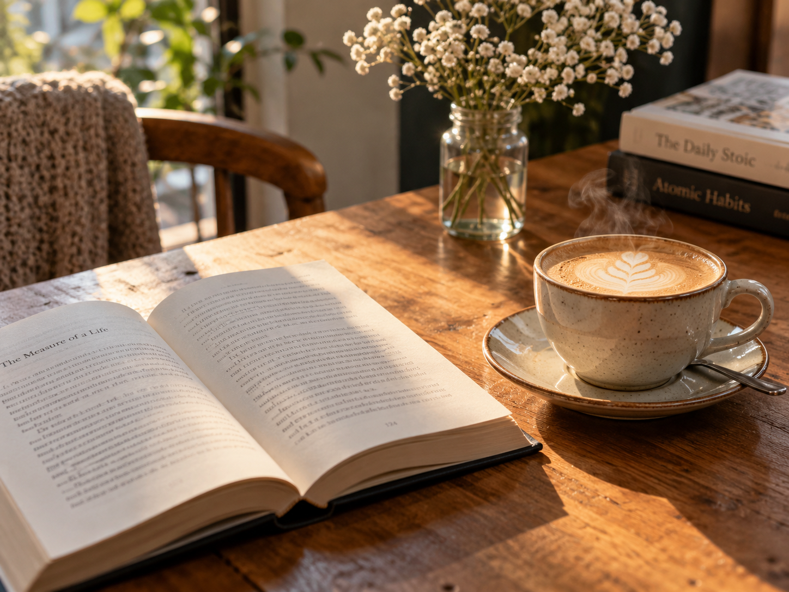
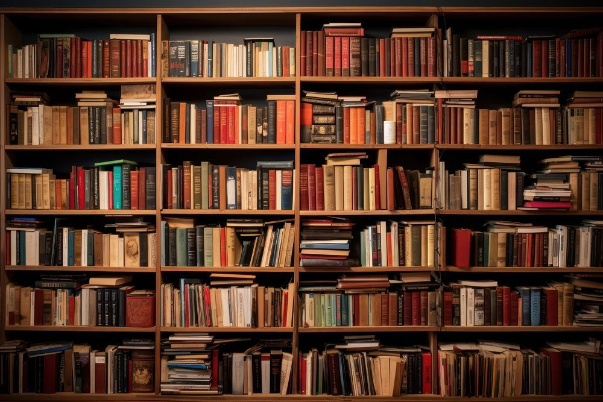

Философия с юмором
Почему поиски смысла жизни заканчиваются у холодильника
Решил найти ответы на важные вопросы, а оказался на кухне.
Константин Симонов · 9 октября 2026
Статьи разных авторов на разные темы.

Решил найти ответы на важные вопросы, а оказался на кухне.
Константин Симонов · 9 октября 2026

Небольшое расследование о книжных магазинах и стопках непрочитанных книг.
Марина Белова · 8 октября 2026